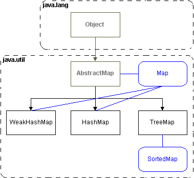

A LinkedList
is implemented with a doubly linked list of Objects. The methods of
LinkedList are not synchronized, if you want thread safe behavior,
provide your own thread monitor, or see the method : java.util.Collections.synchronizedList(
).
You can use a LinkedList as a 'stack' or 'queue', for which it provides
the following special methods : |
|
Object
getFirst()
Object getLast() |
returns the Object at the front
or end of the queue. |
|
Object
removeFirst()
Object removeLast() |
remove the Object at the front
or end of the queue. |
|
| An ArrayList
is a fast resizable array, much like Vector,
but without the overhead of thread synchronization code. |
|
void ensureCapacity(int i) |
resizes the array to a capacity
i. |
|
void trimToSize() |
resizes the array to match
the current size. |
|
| A Vector,
is a growable array of Objects, that is synchronized for use with
multiple threads of execution. |
|
| A HashSet,
is based upon a hash table. It is not sorted, and allows null values.
It is not synchronized, see the method java.util.Collections.synchronizedSet( )
for a thread safe 'wrapper' class. |
A TreeSet,
is based upon an internal TreeMap, it
is not synchronized. |
figure:
the Map classes.
 |
Construct a HashMap,
with the method call
new HashMap(int initCapacity, int LoadFactor);
A HashMap is backed by a hash table,
and is not sorted. It permits null values, and is not synchronized
for multi-threaded access. See the method
java.util.Collections.synchronizedMap( )
for a thread safe 'wrapper' class.
Elements in the WeakHashMap
that are not explicitly referenced anymore, are eligible to be finalized()
and garbage collected.
A TreeMap
is based upon a red-black B-Tree. The keys are sorted in ascending
order. It is not synchronized for threads. See the method
java.util.Collections.synchronizedMap( ) for a thread safe
'wrapper' class. |
|